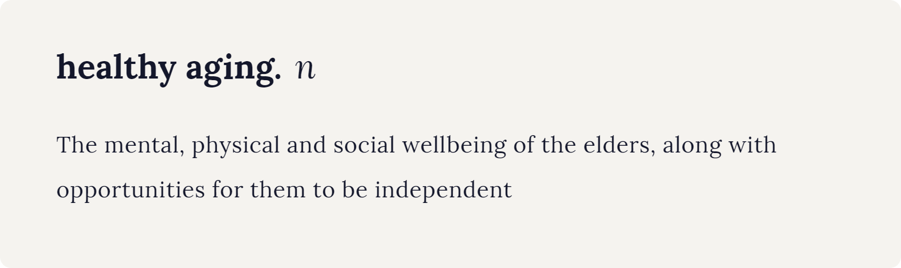
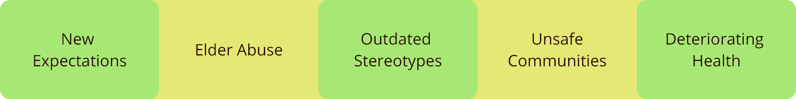
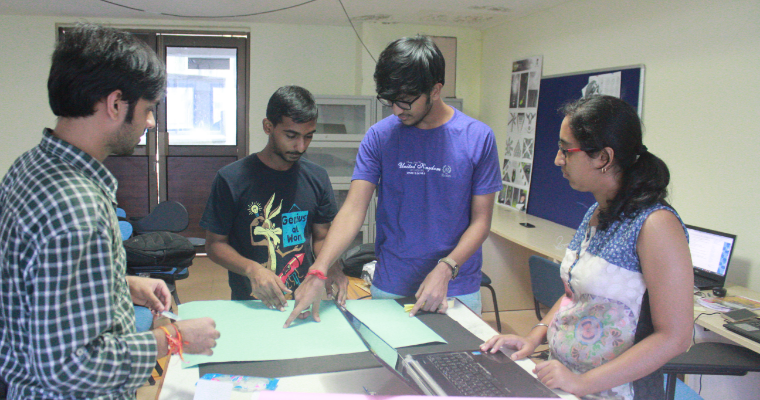
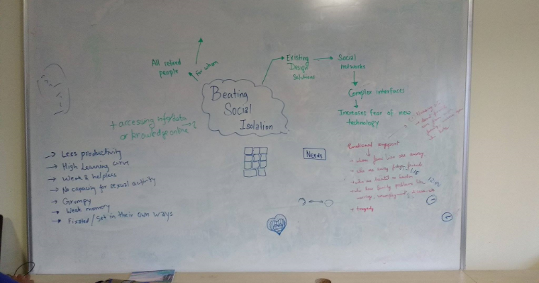
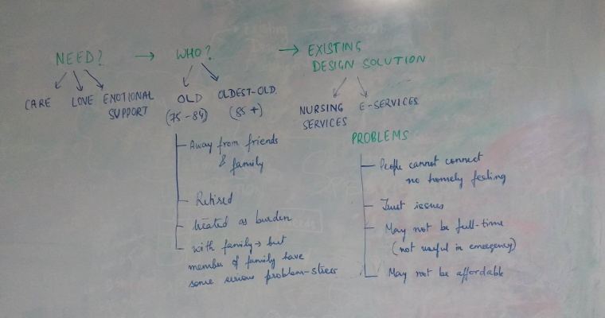
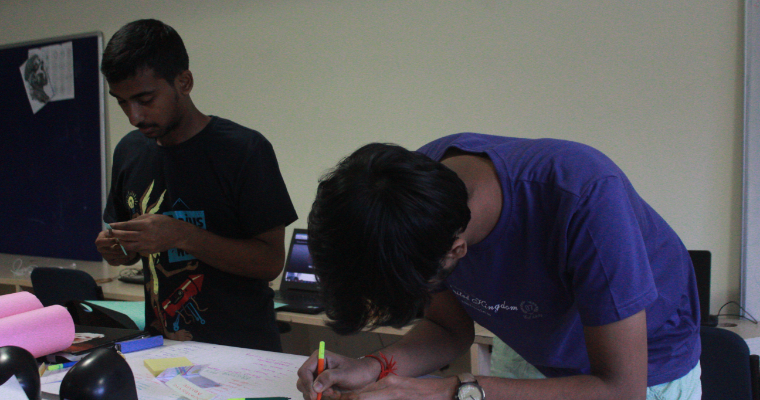

Ozchi'24 2016
Role: UX Researcher, Designer
Timeline: 24 hours, Aug 2016
The OzCHI Student Design Challenge (OzCHI24) is an annual international student design competition run as part of the OzCHI conference. Each year hundreds of students from all over the world participate. A team of upto 5 memebers takes part, and has to submit a paper and a concept video at the end of the 24 hours, detailing the research and the proposed solution.
I did this project in a team of 5
Design Brief
The elderly population bracket (those aged 60 or older) is growing. Despite numerous positive developments and quality of life improvements for the elderly, they continue to experience many significant challenges. Create a design concept that supports ‘Healthy Ageing’ based on the interests and behaviours of a specific group of older people (60+).
Research
This was a slightly new domain for us, hence a basic seconday literature research was of utmost importance. Since the start of the designathon, we dived deep into reading a plethora of research papers on the psychology of aging, the role of HCI in healthy aging and the behavourial patterns of senior adults. The call to action was to empathize with the target group and to understand the various factors contributing to healthy aging.
Due to time constraints, we had to skip primary user research, and thus based all our understanding on literature review.
Insights
The Published literature helped us understand the concept of 'healthy aging'.
We were also able to identify the following problems associated with healthy aging.
Ideation
After the research we jumped on to brain storming upon using HCI to solve the problem of healthy aging by helping alleviate isolation and smoothing the aging process.


Literature research and brainstorming led us to one particularly big issue senior adults face very frequently, Not being able to learn and develop their particular self at such age, primarily due to the social stigma associated with them, i.e. they have low learnability.
Therefore, the obvious thing for us was to get on to solve the problems of low self confidence, boredom and learnability.
The next step was to decide how we were going to bring HCI into the scenario, and to brainstorm a detailed solution. We researched a lot on the different modailities that we could employ for the same, and came to the conclusion that a Virtual Reality based application would be the best to keep the target group engaged, because of its interactivity, versatitlity, guesture control, fun and realisti environment and no need for extra accessories.
We decided to design a VR based simulation game, which would simulate real life situations for the users, to learn new skills and explore new adventures through interactivity.
Features


Visual Design
We referred to the Youtube Brand Resources for the visual design of the app. Youtube Red (#CD201F) was used as it is, and Mine Shaft color (#222121) was chosen to give it a feel of night mode and so that it was less stressful to the eyes of the users.


Learnings
This project was meant to serve as an application for the design theories and principles I had studied, and it proved very fruitful as such. I learned not only the number of decisions a designer has to take while working on a product, but also the intricate reasoning behind every decision.
It was my first time going through the Apple Human Interface Guidelines, and there was a newfound respect for the UX Decisions taken at Apple. I also learned how far good designers go to make sure an app looks consistent over the various operating systems.
The project also introduced me to the hidden UX in hamburger navigations and why Apple could afford tab-bars, while in Android, it could prove to be a bad decision. I also realised the importance of minimizing the steps for a user to complete a task.
All in all, it proved to be a good project, in terms of learning and applying the learnings.
Thank you!
Back to PortfolioLet's Talk!